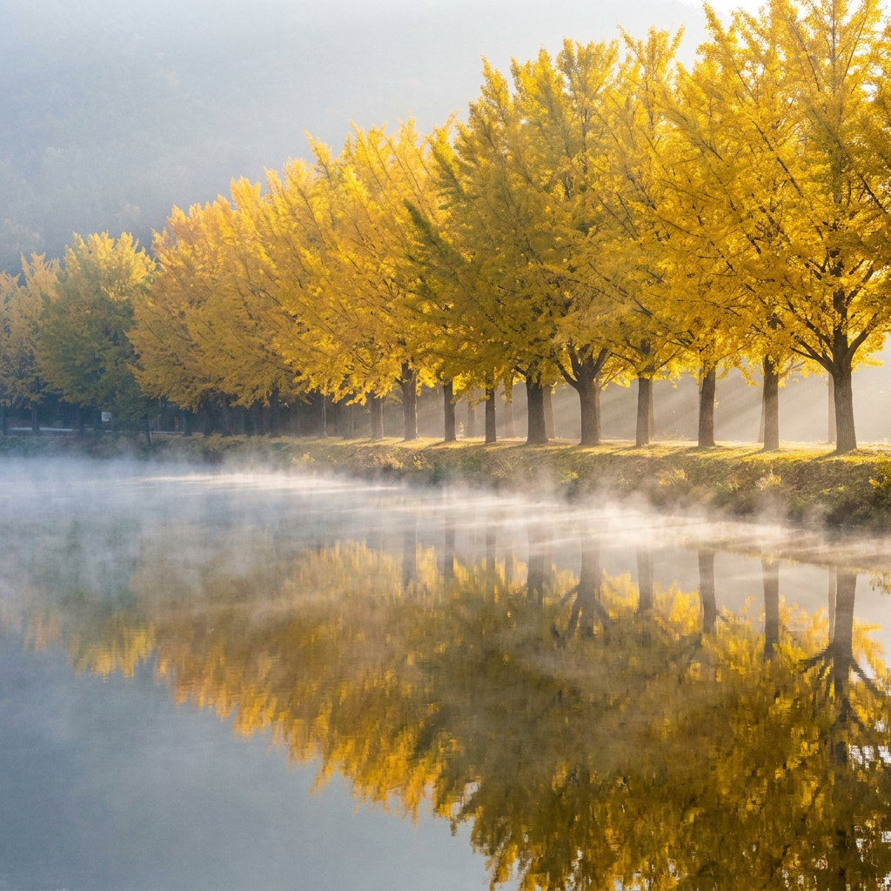
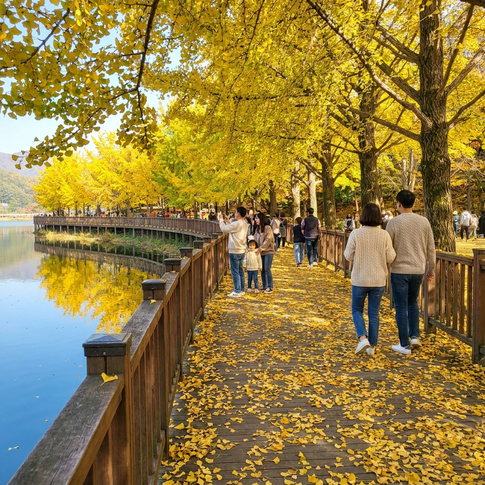
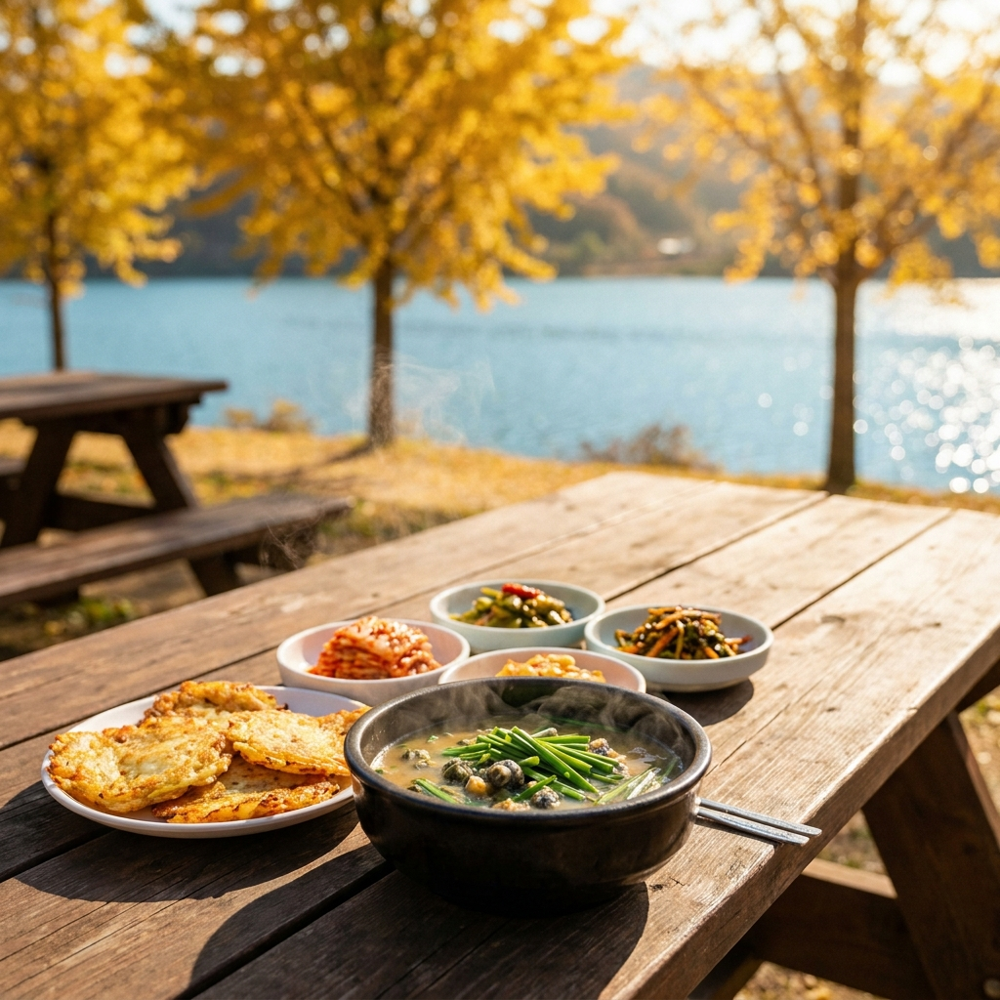

괴산 문광저수지 은행나무길 새벽 물안개 절정 시간과 포토존 위치 — 무료 주차장 요령과 당일 드라이브 코스
충북 괴산군 문광면에 위치한 문광저수지(양곡저수지)는 가을이 깊어지면 약 400m에 걸쳐 늘어선 아름드리 은행나무 300여 그루가 일제히 황금빛으로 물드는 전국 최고의 가을 명소입니다. 저수지 수면 위로 피어오르는 자욱한 새벽 물안개와 거울처럼 맑은 수면에 비친 노란 은행나무의 데칼코마니 반영은 사진작가들과 여행자들을 단숨에 매료시킵니다.
문광저수지는 별도의 입장료가 없는 완전 무료 개방 관광지이지만, 물안개가 피는 시간대와 기상 조건을 맞추지 못하면 평범한 저수지 풍경만 보고 돌아올 수 있습니다. 오늘 포스팅에서는 새벽 물안개 발생 조건과 촬영 골든 타임, 저수지 수변 데크길 포토존 3곳, 주차장 혼잡 회피 요령, 그리고 괴산 당일치기 추천 드라이브 코스까지 꼼꼼하게 정리해 드립니다.

문광저수지 고요한 수면 위로 피어오르는 새벽 물안개와 황금빛 은행나무 터널 / AI 제작 이미지
01 | 충북 괴산 문광저수지 400m 은행나무길의 유래와 사계
문광저수지의 은행나무길은 1979년 양곡리 마을 주민들이 척박한 마을 진입로를 아름답게 가꾸기 위해 자발적으로 300여 그루의 어린 은행나무 묘목을 심으면서 시작되었습니다. 주민들의 지극한 정성으로 40년이 넘는 세월 동안 자라난 나무들은 이제 둘레가 굵은 거목으로 성장해 저수지 제방을 따라 웅장한 가을 터널을 이룹니다.
봄에는 푸릇푸릇한 연둣빛 신록이 저수지를 둘러싸고, 여름에는 울창한 녹음이 낚시꾼들과 캠퍼들에게 시원한 그늘을 제공합니다. 그리고 가을이 찾아오면 마을 전체가 눈부신 황금빛으로 물들며 사계절 중 가장 극적인 변신을 선보입니다.
특히 2013년 방영된 인기 드라마 '비밀'의 촬영지로 알려지면서 전국적인 명성을 얻게 되었고, 현재는 충북을 대표하는 가을 힐링 걷기 코스이자 사진 애호가들의 필수 순례지로 자리 잡았습니다.
02 | 2026 괴산 문광저수지 은행나무 노란 물결 절정 시기
문광저수지의 은행나무는 일교차가 큰 분지 지형과 저수지의 냉습한 기운 덕분에 도심 지역보다 단풍이 약 1주일가량 일찍 찾아옵니다. 2026년 기준, 10월 초순부터 나뭇가지 끝에서 서서히 연노란빛이 돌기 시작합니다.
산림청의 가을 단풍 예측 지도와 기상청 통계에 따르면 2026년 문광저수지 은행나무의 절정기는 10월 15일부터 10월 28일 사이가 될 것으로 예상됩니다. 이 시기에는 나무 전체가 짙은 황금빛으로 가득 차며 수면과 바닥 모두가 노란 융단으로 덮입니다.
10월 말 이후 찬 서리가 내리기 시작하면 나뭇잎이 비처럼 쏟아져 내리며 제방 산책로에 두툼한 노란 낙엽 카펫을 깔아놓는데, 이 낙엽 밟기 풍경 또한 절정기 못지않은 낭만을 선사합니다.
03 | 신비로운 새벽 물안개가 피어오르는 골든 타임과 기상 조건
문광저수지의 백미는 단연 저수지 수면 위로 자욱하게 피어오르는 몽환적인 새벽 물안개입니다. 물안개는 매일 발생하는 것이 아니기 때문에 방문 전날 기상청 예보를 반드시 확인해야 합니다.
문광저수지 새벽 물안개 발생 필수 3대 조건
1. 낮과 밤의 기온 차 10℃ 이상: 낮 동안 따뜻해진 저수지 수온과 새벽의 차가운 공기가 만나면서 증발 안개가 형성됩니다.
2. 바람이 없는 고요한 상태 (풍속 1~2m/s 이하): 바람이 불면 피어오르던 물안개가 순식간에 흩어지므로 무풍 조건이 필수적입니다.
3. 일출 전후 1시간 골든 타임 (오전 6시 30분 ~ 7시 40분): 해가 지평선 너머로 솟아오르며 첫 햇살이 은행나무 숲 사이를 관통할 때 물안개에 황금빛 빛내림이 연출됩니다.
따라서 새벽 6시 전후에 현장에 도착하여 삼각대와 카메라를 세팅하고, 서서히 밝아오는 여명 속에서 물안개가 춤추는 순간을 포착하는 것이 프로 여행자들의 방문 요령입니다.
04 | 시간대별 관람 분위기 비교표 — 새벽 물안개 vs 한낮 황금빛 반영
문광저수지는 방문하는 시간대에 따라 전혀 다른 두 가지 매력을 보여줍니다. 새벽 물안개가 주는 신비로움과 한낮의 햇살 아래 빛나는 화사함 중 자신의 취향에 맞는 시간대를 선택할 수 있습니다.
| 구분 |
새벽 시간대 (06:00 ~ 08:30) |
한낮 시간대 (11:00 ~ 15:00) |
일몰 시간대 (16:30 ~ 18:00) |
| 주요 풍경 |
신비로운 물안개, 일출 빛내림, 몽환적 분위기 |
투명한 파란 하늘과 선명한 황금빛 은행나무 반영 |
노을빛에 물드는 주황빛 수면과 고즈넉한 정취 |
| 방문객 및 혼잡도 |
사진작가 중심, 주차장 비교적 여유(7시 전) |
가족·연인 단위 관광객 집중, 주차 정체 극심 |
방문객이 빠져나가며 한적하고 여유로운 산책 |
| 촬영 난이도 |
고난도 (삼각대 필수, 노출 조절 필요) |
보통 (스마트폰으로도 화사한 색감 촬영 가능) |
보통 (역광 노을 실루엣 감성 샷 연출) |
| 기온 및 체감 |
영하권에 근접하는 쌀쌀함, 방한 필수 |
따스한 가을 햇살, 쾌적한 야외 활동 가능 |
기온이 급격히 떨어지며 쌀쌀해짐 |
조용한 힐링과 감성 사진을 원하신다면 이른 아침 방문을, 가족들과 함께 여유로운 소풍 분위기를 즐기시려면 오전 10시 이전이나 오후 3시 이후 방문을 추천합니다.

한낮 햇살 아래 노란 은행잎 카펫이 깔린 문광저수지 수변 산책로 / AI 제작 이미지
05 | 인생 사진을 건지는 저수지 수변 데크 포토존 명당 3곳
문광저수지 둘레길에는 곳곳에 사진을 찍기 좋은 포인트가 마련되어 있습니다. 그중에서도 가장 완성도 높은 구도를 잡을 수 있는 대표 명당 3곳을 소개합니다.
첫 번째는 '마을 입구 수변 데크로드 초입'입니다. 길게 뻗은 400m 은행나무길의 소실점이 한눈에 들어오는 자리로, 산책로 양옆의 노란 은행나무 터널과 바닥의 낙엽 융단이 길게 이어져 인물 전신 사진을 담기에 가장 훌륭합니다.
두 번째는 '저수지 건너편 제방 낚시터 방면'입니다. 은행나무길의 반대편 수변으로 걸어가 망원 렌즈나 스마트폰 2~3배 줌으로 바라보면, 잔잔한 호수 수면 위로 은행나무 군락 전체가 완벽하게 대칭을 이루는 반영 샷을 담을 수 있습니다.
세 번째는 '저수지 중간 포토존 액자 조형물'입니다. 네모난 원목 액자 프레임 뒤로 은행나무 숲과 호수가 배경으로 펼쳐지도록 설치되어 있어, 프레임 안에 걸터앉아 기념사진을 남기기에 안성맞춤입니다.
06 | 문광저수지 무료 주차장 3곳과 주말 새벽 만차 회피 팁
문광저수지는 별도의 주차 요금을 받지 않는 무료 주차장이 조성되어 있습니다. 주차 공간은 총 3개 구역으로 나뉩니다.
제1주차장은 은행나무길 초입 메인 주차장(약 70대 수용), 제2주차장은 양곡마을회관 인근 공터 주차장(약 50대 수용), 제3주차장은 저수지 하류 방면 임시 비포장 주차장(약 100대 수용)입니다.
주말 주차 대란 회피 실전 가이드
- 주말 아침 7시 30분 이전 도착: 새벽 물안개 출사객들이 6시부터 몰려 제1주차장은 7시면 만차됩니다. 7시 30분 이후에는 진입로 1차선 갓길에 긴 차량 정체가 시작됩니다.
- 회차 차량과 출차 타이밍 공략: 아침 8시~8시 30분 사이에는 일출 촬영을 마친 사진작가들이 대거 빠져나가므로 제1주차장에 일시적으로 빈자리가 생깁니다.
- 문광면사무소 임시 주차 후 도보 이동: 극심한 혼잡 시간대(오전 10시~오후 2시)에는 무리하게 저수지 입구로 진입하지 말고, 약 1.2km 떨어진 문광면사무소 인근 공공 주차장에 차를 대고 산책하듯 걸어오는 것이 빠릅니다.
07 | 저수지 둘레길 2km 트레킹 소요시간과 낚시터 주변 산책 요령
문광저수지는 은행나무길 구간(약 400m) 외에도 저수지 전체를 한 바퀴 둘러볼 수 있는 수변 생태 탐방로(약 2.0km)가 깔끔하게 연결되어 있습니다.
은행나무길만 왕복으로 관람할 경우 약 30분이면 충분하지만, 저수지 전체 둘레길을 천천히 산책하면 성인 걸음으로 약 45분에서 1시간 정도 소요됩니다. 경사가 거의 없는 평탄한 흙길과 나무 데크로 이어져 있어 누구나 편안하게 걸을 수 있습니다.
저수지 수면에는 수상 방갈로 형태의 낚시터 좌대들이 떠 있는데, 낚시 구역은 사유 시설이므로 함부로 들어가거나 낚시객들에게 방해가 되지 않도록 주의해야 합니다. 고즈넉한 수상 좌대와 은행나무가 어우러진 풍경 또한 독특한 서정성을 자아냅니다.

문광저수지 산책 후 맛보는 괴산 명물 올갱이 해장국 한 상 / AI 제작 이미지
08 | 은행 열매 냄새 회피와 편안한 관람을 위한 준비물 체크리스트
가을철 은행나무 명소를 찾을 때 가장 큰 복병은 바닥에 떨어진 은행 열매 특유의 냄새입니다. 양곡리 마을 주민들이 관광객의 편의를 위해 주기적으로 은행 열매를 털어 수거하지만, 바닥에 밟힌 열매가 있을 수 있습니다.
문광저수지 쾌적한 관람을 위한 준비물 체크리스트
- 세척하기 쉬운 신발이나 물티슈: 밑창 홈이 깊지 않은 운동화를 착용하고, 차에 타기 전 신발 밑창을 닦을 수 있는 물티슈와 비닐봉지를 준비하세요.
- 두터운 방한 외투와 장갑 (새벽 방문 시): 저수지 수변의 새벽 기온은 도심보다 4~5℃ 이상 낮으므로 패딩이나 플리스 재킷, 핫팩이 필수입니다.
- 보온병에 담은 따뜻한 차나 커피: 쌀쌀한 아침 공기 속에서 호수를 바라보며 마시는 따뜻한 차 한 잔은 최고의 힐링이 됩니다.
09 | 문광저수지 연계 괴산 당일치기 가을 드라이브 추천 코스
문광저수지 관람은 1~2시간이면 충분하므로 인근의 괴산 대표 명소들과 함께 묶어 당일치기 가을 드라이브 여행 코스를 구성하는 것이 효율적입니다.
괴산 가을 낭만 당일 드라이브 최적 동선
1. 오전 07:00 ~ 08:30: 문광저수지 도착, 새벽 물안개 및 은행나무 터널 관람
2. 오전 09:00 ~ 10:30: 산막이옛길 이동 (차로 약 20분), 칠성면 괴산호 수변 데크길 산책 및 유람선 탑승
3. 낮 12:00 ~ 13:30: 괴산 전통시장 이동, 점심 식사(올갱이국) 및 괴산 청결고추·시골 장터 구경
4. 오후 14:00 ~ 16:00: 화양구곡 또는 수옥폭포 탐방 (차로 약 25분), 기암괴석과 붉은 계곡 단풍 트레킹
특히 산막이옛길은 괴산호를 따라 완만하게 조성된 숲길로, 문광저수지의 황금빛 은행나무와 괴산호의 붉은 단풍을 하루 만에 모두 만끽할 수 있는 최고의 조합입니다.
10 | 괴산 명물 올갱이국과 시골 장터 맛집 먹거리 가이드
괴산 여행에서 빼놓을 수 없는 미식의 즐거움은 청정 괴산천에서 잡아 올린 다슬기로 끓여낸 '올갱이국(다슬기 해장국)'입니다.
괴산 시외버스터미널과 괴산 전통시장 일대에는 수십 년 전통의 올갱이국 전문 식당들이 밀집해 있습니다. 구수한 된장 베이스 국물에 아욱과 부추를 듬뿍 넣고, 계란물을 입힌 올갱이 살을 넣어 끓여내어 시원하고 쌉싸름한 감칠맛이 일품입니다. 가격대는 1인분 기준 10,000원~12,000원 선으로 부담 없이 든든한 아침이나 점심 식사로 제격입니다.
또한 전통시장에서는 갓 튀겨낸 바삭한 고추튀김, 메밀전병, 올갱이전 등 토속 주전부리를 맛볼 수 있으며, 전국적으로 유명한 명품 괴산 청결고추와 시골 참기름도 합리적인 가격에 구매할 수 있습니다.
📌 함께 읽으면 좋은 가을 나들이 & 생활 팁
#문광저수지
#문광저수지은행나무길
#문광저수지물안개
#괴산은행나무길
#괴산가볼만한곳
#가을출사명소
#괴산여행코스
#산막이옛길
#괴산올갱이국
#가을드라이브코스